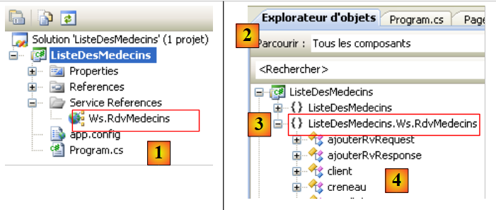
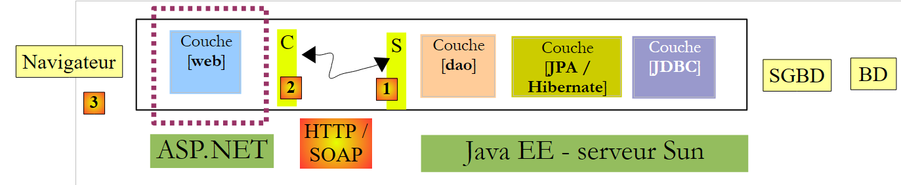
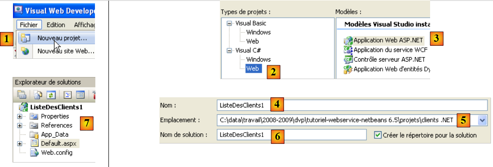
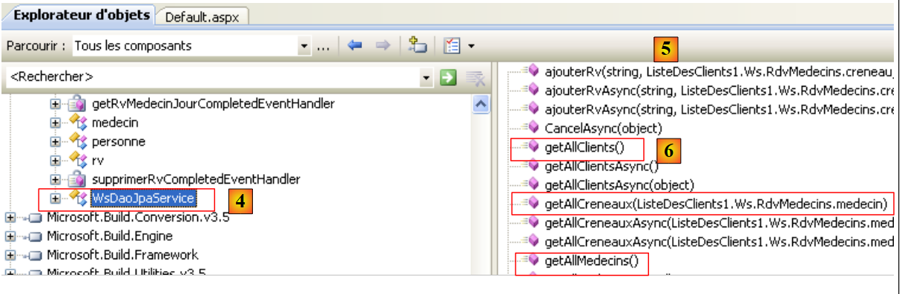

5. J2EE 预约服务的 .NET 客户端
5.1. 一个 C# 2008 客户端
现在，我们假设前面的 Web 服务已可用且处于活动状态。Web 服务可被使用各种语言编写的客户端调用。在此，我们将编写一个 C# 控制台客户端来显示医生列表。
 |
首先，让我们创建一个 C# 项目：
 |
我们创建一个名为 [ListeDesMedecins] [2] 的控制台应用程序 [1]。在 [3] 中，我们创建了一个 Web 服务的引用。该工具与 NetBeans 中使用的工具类似：它会为远程 Web 服务创建一个本地代理。
 |
- 在 [1] 中，指定 Web 服务 WSDL 文件的 URI（参见第 4.10.2 节）。
- 在 [2] 中，我们要求向导发现该 URI 所暴露的 Web 服务
- 在 [3] 中，将显示找到的 Web 服务，而在 [4] 中，将显示其暴露的方法。
- 在 [5] 中，指定应生成 C 代理类的命名空间
- 在 [6] 中，生成 C 代理。
 |
- 在 [1] 中，是刚刚创建的 Web 引用。双击它。
- 在 [2] 中，双击后打开的对象资源管理器。
- 在 [3] 中，选择命名空间 [ListeDesMedecins.Ws.RdvMedecins]，这是生成的 C 代理的命名空间。第一个术语 [ListeDesMedecins] 是所创建的 C# 应用程序的默认命名空间（我们将其命名为 ListeDesMedecins）。 第二个名称 [Ws.RdvMedecins] 是我们在向导中为 C 代理分配的命名空间。最终，C 代理对象属于命名空间 [ListeDesMedecins.Ws.RdvMedecins]。
- 在 [4] 中，生成的 C 代理对象
 |
- 在 [5] 中，[WsDaoJpaClient] 是本地实现远程 Web 服务方法的类。
- 在[6]中，[WsDaoJpaClient]类的方法。 在此处，我们找到了远程Web服务的方法，例如[7]中的getAllClients方法。
让我们来查看生成的实体的代码：
 |
在上文的 [1] 中，我们请求查看 [client] 类的代码：
...
public partial class client : personne {
}
....
public partial class personne : object, System.ComponentModel.INotifyPropertyChanged {
...
public long id {
...
}
...
}
上文仅包含本研究所需的代码。
- 第 2 行：[customer] 类继承自 [person] 类，这与 Web 服务中的情况一致。
- 第 8 行：[person] 类的公共属性
我们注意到，生成的代码并未遵循标准的 C# 编码规范。类名和公共属性的名称应以大写字母开头。
让我们回到我们的 C# 应用程序：
 |
[Program.cs] [1] 是测试类。其代码如下：
using System;
using ListeDesMedecins.Ws.RdvMedecins;
using Client = ListeDesMedecins.Ws.RdvMedecins.client;
namespace ListeDesMedecins {
class Program {
static void Main(string[] args) {
try {
// client [dao] layer instantiation
WsDaoJpaClient dao = new WsDaoJpaClient();
// list of doctors
foreach (Client client in dao.getAllClients()) {
Console.WriteLine(String.Format("{0} {1} {2}", client.titre, client.prenom, client.nom));
}
} catch (Exception e) {
Console.WriteLine(e);
}
}
}
}
在第 12 行，使用了 C 代理中的 [Client] 类，尽管我们刚才看到它实际上被称为 [client]。正是第 3 行的声明使我们能够使用 [Client] 而不是 [client]。这使我们能够遵守类命名约定。 同样在第 12 行，使用了 [getAllClients] 方法，因为这是 C 代理中该方法的名称。根据 C# 编码规范，该方法应命名为 [GetAllClients]。
运行前面的程序 [1] 会得到 [2] 所示的结果。
5.2. 首个 ASP.NET 2008 客户端
现在我们将编写第一个 ASP.NET / C# 客户端，用于显示客户端列表。
 |
在此架构中，有两台 Web 服务器：
- 一个运行远程 Web 服务的 Web 服务器
- 运行远程 Web 服务 ASP.NET 客户端的 Web 服务器
我们将使用 Visual Web Express 2008 SP1 创建 ASP.NET 客户端 Web 项目。如果您的系统未安装 Visual Web Express 2008 SP1，下文将介绍如何创建相同的项目。
 |
我们创建一个名为 [ClientList1] [4, 5, 6] 的 Web 应用程序 [1, 2, 3]。通过此方式创建的项目可见于 [7]。
 |
- 在 [5] 中，右键单击项目名称以添加 Web 服务引用。
- 在[6]中，指定Web服务WSDL文件的URI（参见第4.10.2节）。
- 在 [7] 中，请向向导请求发现该 URI 所暴露的 Web 服务
 |
- 在 [8] 中，显示已找到的 Web 服务；在 [9] 中，显示其暴露的方法。
- 在[10]中，指定应生成C代理类的命名空间
- 在 [11] 中，指定生成的 Web 服务的引用
双击引用 [Ws.Rdvmedecins] [12] 将显示为 C 代理生成的类和接口：
 |
- 在 [1] 中，双击后打开的对象资源管理器。
- 在 [2] 中，选择命名空间 [ListeDesClients1.Ws.RdvMedecins]，这是生成的 C 代理的命名空间。第一个术语 [ListeDesClients1] 是所创建的 ASP.NET 应用程序的默认命名空间（我们将其命名为 ListeDesClients1）。 第二个部分 [Ws.RdvMedecins] 是我们在向导中为 C 代理分配的命名空间。最终，C 代理对象属于命名空间 [ListeDesClients1.Ws.RdvMedecins]。
- 在 [3] 中，生成的 C 代理对象
 |
- 在 [4] 中，[WsDaoJpaService] 是本地实现远程 Web 服务方法的类。
- 在 [5] 中，[WsDaoJpaService] 类的的方法。 这里我们找到了远程 Web 服务的方法，例如 [6] 中的 getAllClients 方法。
让我们来查看生成的实体的代码：
 |
在上文的 [1] 中，我们请求查看 [client] 类的代码：
public partial class client : personne {
}
...
public partial class personne {
...
public long id {
...
}
上文仅包含本研究所需的代码。
- 第 1 行：[client] 类继承自 [person] 类，这与 Web 服务中的情况相同。
- 第 5 行：[person] 类
- 第 7 行：[person] 类的公共属性
这段代码与第 5.1 节中讨论过的 C# 客户端代码类似。
- 生成的 C 代理的命名空间是其创建向导中定义的命名空间，前面加上 Web 项目本身的命名空间：ListeDesClients1.Ws.RdvMedecins
- 本地实现远程 Web 服务方法的代理类名为 WsDaoJpaService。
- 类名和属性名以小写字母开头
我们可以编写一个页面 [Default.aspx] 来显示客户列表。该页面如下所示：
 |
编号 | 类型 | 名称 | 角色 |
MultiView | 视图 | 视图容器 | |
查看 | CustomerView | 包含客户列表的视图 | |
Repeater | RepeaterClients | 将客户列表以项目符号列表的形式显示 | |
视图 | ErrorView | 用于显示任何错误的视图 | |
标签 | ErrorLabel | 错误文本 |
此页面的代码如下：
<%@ Page Language="C#" AutoEventWireup="true" CodeBehind="Default.aspx.cs" Inherits="ListeDesClients1._Default" %>
<%@ Import Namespace="ListeDesClients1.Ws.RdvMedecins" %>
<!DOCTYPE html PUBLIC "-//W3C//DTD XHTML 1.1//EN" "http://www.w3.org/TR/xhtml11/DTD/xhtml11.dtd">
<html xmlns="http://www.w3.org/1999/xhtml">
<head id="Head1" runat="server">
<title>Liste des clients</title>
</head>
<body>
<form id="form1" runat="server">
<div>
<asp:MultiView ID="Vues" runat="server">
<asp:View ID="VueClients" runat="server">
Liste des clients :<br />
<br />
<ul>
<asp:Repeater ID="RepeaterClients" runat="server">
<ItemTemplate>
<li>
<%#(Container.DataItem as client).nom%>,
<%#(Container.DataItem as client).prenom%>
</li>
</ItemTemplate>
</asp:Repeater>
</ul>
</asp:View>
<asp:View ID="VuesErreurs" runat="server">
L'erreur suivante s'est produite :<br />
<br />
<asp:Label ID="LabelErreur" runat="server"></asp:Label></asp:View>
</asp:MultiView><br />
</div>
</form>
</body>
</html>
请注意，第 3 行需要从 Web 服务的 C 语言代理中导入 [ListeDesClients1.Ws.RdvMedecins] 命名空间，以便能够访问第 20 和 21 行中的 [client] 类。
与呈现页面 [Default.aspx] 关联的控件代码 [Default.aspx.cs] 如下：
using System;
using ListeDesClients1.Ws.RdvMedecins;
namespace ListeDesClients1
{
public partial class _Default : System.Web.UI.Page
{
protected void Page_Load(object sender, EventArgs e)
{
try
{
// local proxy instantiation of remote [dao] layer
WsDaoJpaService dao = new WsDaoJpaService();
// customer view
Vues.ActiveViewIndex = 0;
// client view initialization
RepeaterClients.DataSource = dao.getAllClients();
RepeaterClients.DataBind();
}
catch (Exception ex)
{
// error view
Vues.ActiveViewIndex = 1;
//initialization error view
LabelErreur.Text = ex.ToString();
}
}
}
}
- 第 8 行：当页面首次加载时，将执行 Page_Load 方法。每次客户端请求该页面时，都会发生此加载操作。
- 第 13 行：实例化本地 C 代理。该 C 代理实现了远程 Web 服务接口。应用程序将与该 C 代理进行通信。
- 第 15 行：如果在本地 C 代理的实例化过程中未发生异常，则必须显示名为“VueClients”的视图，即页面“Vues”多视图中的第 0 个视图。
- 第 17 行：重复器的数据源是代理 C 的 getAllClients 方法提供的客户端列表。
- 第 23 行：如果在实例化本地 C 代理时发生异常，则必须显示名为“VueErreurs”的视图，即页面“Vues”多视图中的视图 #1。
- 第 25 行：异常信息显示在“LabelErreur”标签中。
运行 Web 项目将产生以下结果：
 |
5.3. 第二个 ASP.NET 2008 客户端
接下来我们将编写第二个 ASP.NET / C# 客户端，这次使用的是 SP1 之前的 Visual Web Developer Express 2008 版本。
 |
让我们创建 .NET 客户端 Web 项目：
 |
我们创建一个名为 [ClientList] [3] 的网站 [1, 2]。
 |
- 在[4]中，该Web项目
- 在[5]中，通过右键单击项目名称，我们像之前那样添加服务引用。
- 在[6]中，添加了对远程 Web 服务的引用后，该项目
与前面讨论的 SP1 Web 项目不同，我们无法通过“对象资源管理器”访问 Web 服务客户端对象。
重要提示：
- 生成的 C 代理的命名空间是其创建向导中定义的：Ws.RdvMedecins
- 本地实现远程 Web 服务方法的代理类名为 WsDaoJpaClient。
- 类名和属性名均以小写字母开头
我们可以编写一个页面 [Default.aspx] 来显示客户端列表。该页面如下所示：
 |
编号 | 类型 | 名称 | 角色 |
MultiView | 视图 | 视图容器 | |
视图 | 客户视图 | 包含客户列表的视图 | |
Repeater | RepeaterClients | 将客户列表以项目符号列表的形式显示 | |
视图 | ErrorView | 显示任何错误的视图 | |
标签 | ErrorLabel | 错误文本 |
此页面的代码如下：
<%@ Page Language="C#" AutoEventWireup="true" CodeFile="Default.aspx.cs" Inherits="_Default" %>
<%@ Import Namespace="Ws.RdvMedecins" %>
<!DOCTYPE html PUBLIC "-//W3C//DTD XHTML 1.1//EN" "http://www.w3.org/TR/xhtml11/DTD/xhtml11.dtd">
<html xmlns="http://www.w3.org/1999/xhtml">
<head id="Head1" runat="server">
<title>Liste des clients</title>
</head>
<body>
<form id="form1" runat="server">
<div>
<asp:MultiView ID="Vues" runat="server">
<asp:View ID="VueClients" runat="server">
Liste des clients :<br />
<br />
<ul>
<asp:Repeater ID="RepeaterClients" runat="server">
<ItemTemplate>
<li>
<%#(Container.DataItem as client).nom%>, <%#(Container.DataItem as client).prenom%>
</li>
</ItemTemplate>
</asp:Repeater>
</ul>
</asp:View>
<asp:View ID="VuesErreurs" runat="server">
L'erreur suivante s'est produite :<br />
<br />
<asp:Label ID="LabelErreur" runat="server"></asp:Label></asp:View>
</asp:MultiView><br />
</div>
</form>
</body>
</html>
请注意，第 2 行需要从 Web 服务的 C 代理中导入 [Ws.RdvMedecins] 命名空间，以便能够访问第 19 行的 [client] 类。
与呈现页面 [Default.aspx] 关联的控件代码 [Default.aspx.cs] 如下：
using System;
using Ws.RdvMedecins;
public partial class _Default : System.Web.UI.Page
{
protected void Page_Load(object sender, EventArgs e)
{
try
{
// local proxy instantiation of remote [dao] layer
WsDaoJpaClient dao = new WsDaoJpaClient();
// customer view
Vues.ActiveViewIndex = 0;
// client view initialization
RepeaterClients.DataSource = dao.getAllClients();
RepeaterClients.DataBind();
}
catch (Exception ex)
{
// error view
Vues.ActiveViewIndex = 1;
//initialization error view
LabelErreur.Text = ex.ToString();
}
}
}
此代码与上一版本的代码类似。运行该 Web 项目将产生以下结果：